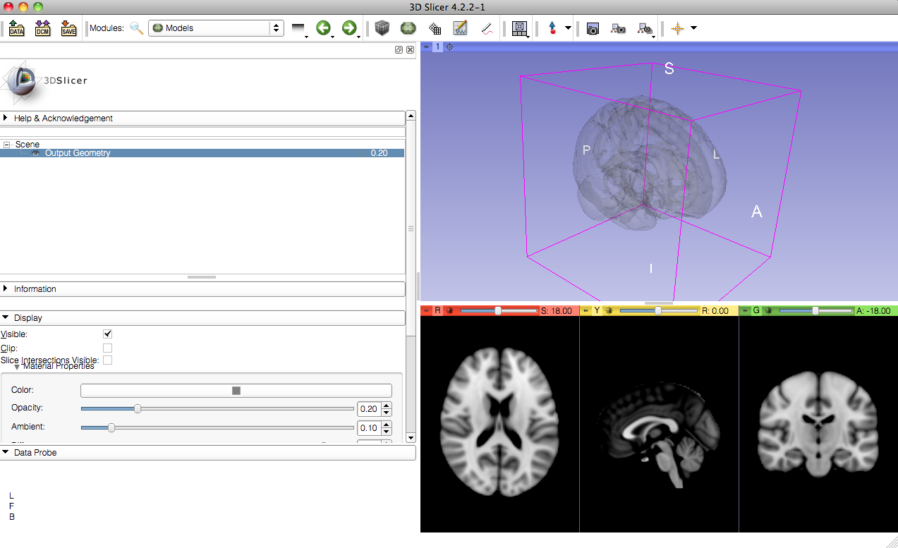
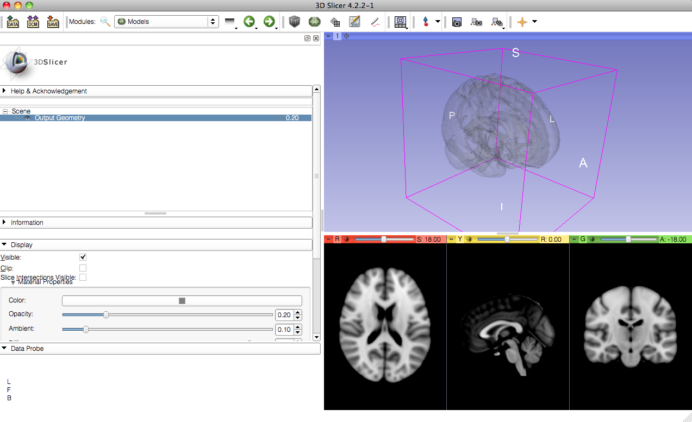
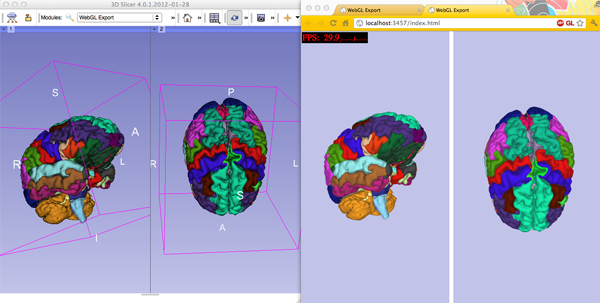
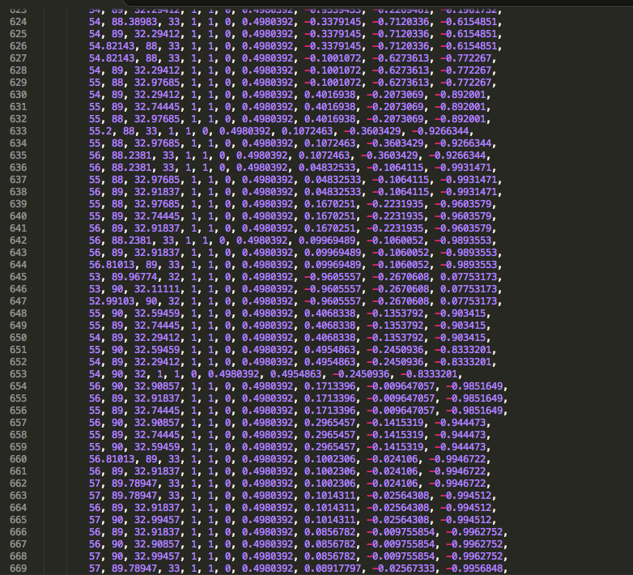

- GUI-based interface:

@StrictlyStat (github: muschellij2)
Johns Hopkins Bloomberg School of Public Health

From https://github.com/xtk/SlicerWebGLExport/blob/master/README.md. Shows exportability.
(Left 3D Slicer, Right - Google Chrome)

PythonR/Explanation?R adaptation of OpenGLplot3d, hist3d, text3d, etc.writeWebGL - rgl function that allows you to write to webGLReal Life Example:
SubLIME is a MS lesion detection algorithm [Sweeney et. al. 2012].
MS - SUBLIME
before 3D rendering - didn't notice misregistration
So RGL rendering is perfect, right?
